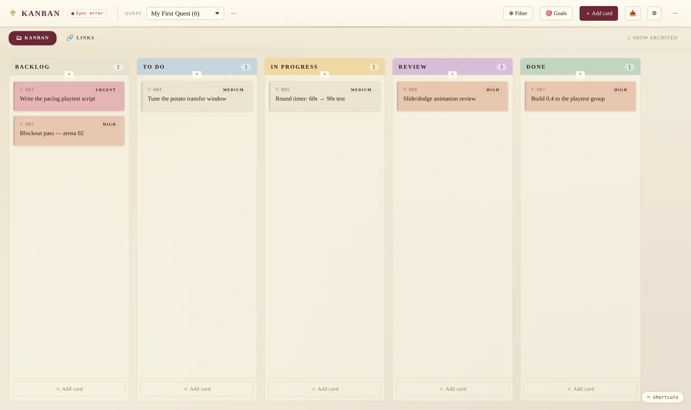

FossilsKanban
What is FossilsKanban?
A production quest board for the studio: five columns, cards grouped by quest, and per-discipline goal checklists. It is one HTML file of roughly 4,250 lines — no install, no account, no build.
The framing is deliberate. Columns are a pipeline, work is grouped into quests, and goals are tracked per discipline — the board speaks the language the team already used rather than making them translate into someone else's vocabulary.
The board
Cards carry a priority, an assignee, discipline areas, a due date, subtasks, blockers and an optional parent, and they can be dragged between columns. Above them sit Area Goals — high-level checklists per discipline, kept separate from card subtasks so a project-level objective isn't buried inside one task.
A second view keeps the project's links — builds, documents, references — beside the board rather than in a chat history, and finished work goes to an archive instead of being deleted.
Local first, sync optional
The board stores everything in the browser and treats that as the normal case, with an Export JSON as the backup path. Real-time team sync is available through Firestore, but it is opt-in: the file ships with it off, and turning it on is a config block near the top of the script plus about ten minutes in a Firebase console.
That ordering matters. A tool that needs a backend before it does anything useful never gets adopted; this one is useful the moment it opens, and the team can decide later whether it is worth wiring up.
Built for people who live in it
- N — new card
- Ctrl/⌘+K or / — search
- G then K / L — switch view
- 1–9 — filter to a status
- Filter by text, by discipline area, or to just your own cards.
- Switch between quests without losing the filter.
- Archive keeps completed work out of the way but recoverable.
- Shortcuts only fire when no input is focused.